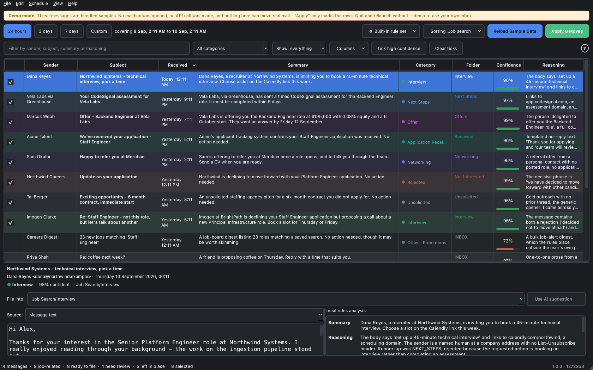

Sort your job-search email in iCloud. On your Mac, in seconds, without an API key.

You applied to forty places. Your inbox is now rejections, assessment links, "we received your application", recruiter spam, and one interview invitation you have not spotted yet.
The last day, three days, a week, or any range. Messages are fetched without being marked as read.
Offer, interview, next steps, acknowledgement, referral, rejection, or cold outreach, with a plain-language reason.
Every message gets a tick box. Nothing moves until you press Apply.
Anything below the confidence bar goes to Needs Review instead of a category folder.
The Job Search folders are created in your iCloud account on the first scan. You never touch Mail.
Scan on a timer, from the menu bar, or in the background after you quit.
The built-in sorter is a rule set, not a model: about 530 weighted signals covering the language hiring mail actually uses, plus the shape of the subject line, the sender's domain, and whether an instruction is a real request or a hypothetical one. Measured against a language model's verdicts on 102 real messages:
| Job-related or not | 98% agreement |
|---|---|
| Exact category | 83% agreement |
| Of the messages it filed | 98% correct |
It is instant, free, private and deterministic, and nothing leaves your Mac. If you would rather use Claude, Gemini, GPT or a local Ollama model, switch from the gear button in the toolbar.
git clone https://github.com/NickCysEDU/Mail-Manager.git
cd Mail-Manager
./dev demo # opens the app with sample mail, no setup at all
./dev build # builds Mail Manager.app
./build_dmg.sh # builds the disk imageWith the built-in sorter, no message text leaves your Mac. Your iCloud app-specific password and any model API keys are stored in the macOS Keychain, never in a file. Message bodies never reach the log. The full account is in SECURITY.md.